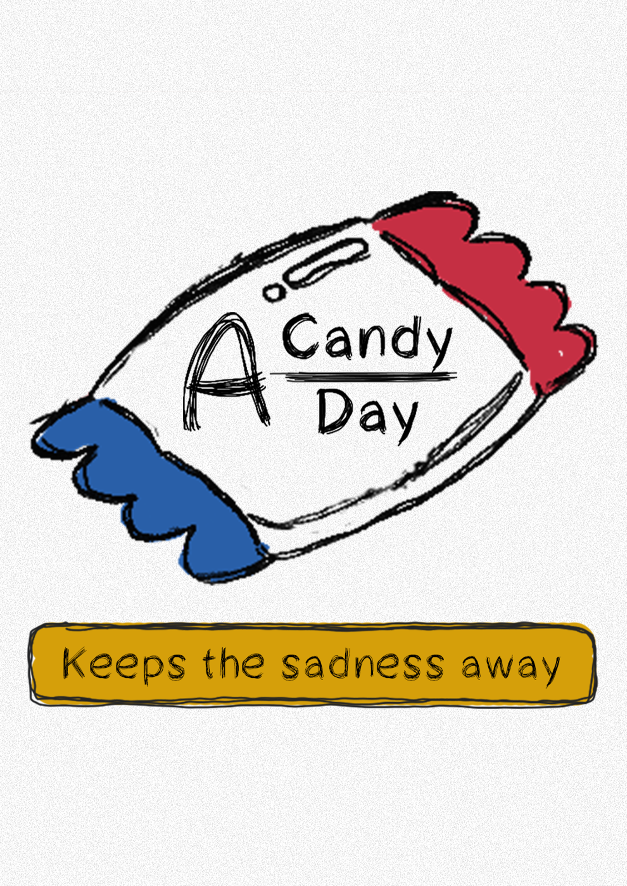

PROTOTYPE / 03
A Candy A Day (Original)
PROJECT DESCRIPTION
This project explores how a seemingly innocent 2D point-and-click game can gradually shift from being cute to unease, revealing that the player’s kind actions have been nurturing something dangerous all along. Through this shift, the work investigates how interactive design can evoke moments of self-awareness—when the play no longer feels safe, and players must confront their own complicity. Drawing on ideas of procedural rhetoric and player ethics, the process unfolds through cycles of concept design, prototyping, and playtesting, each refining the balance between lighthearted aesthetics and unsettling undertones.
